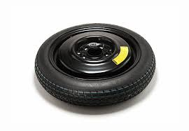
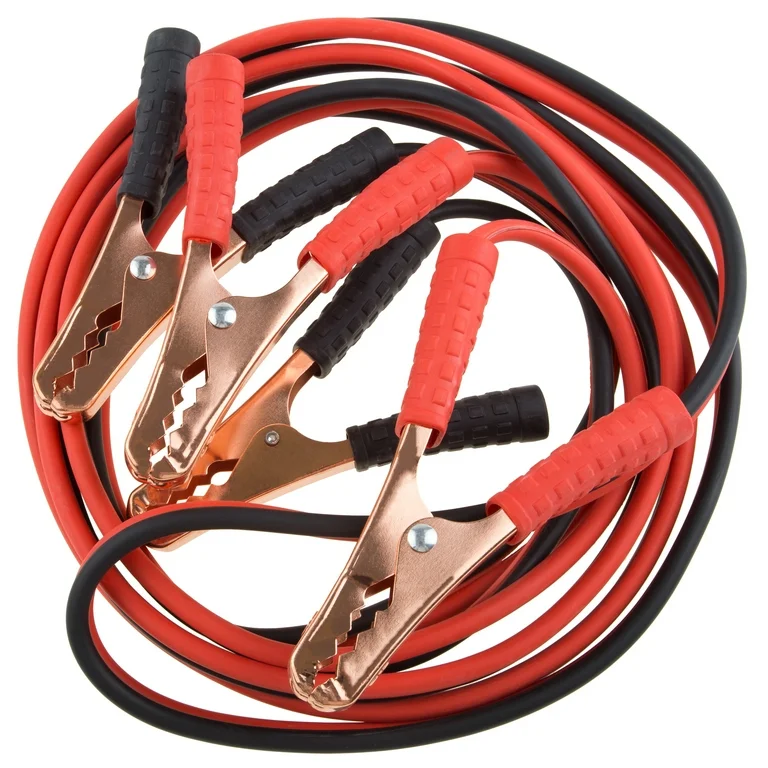
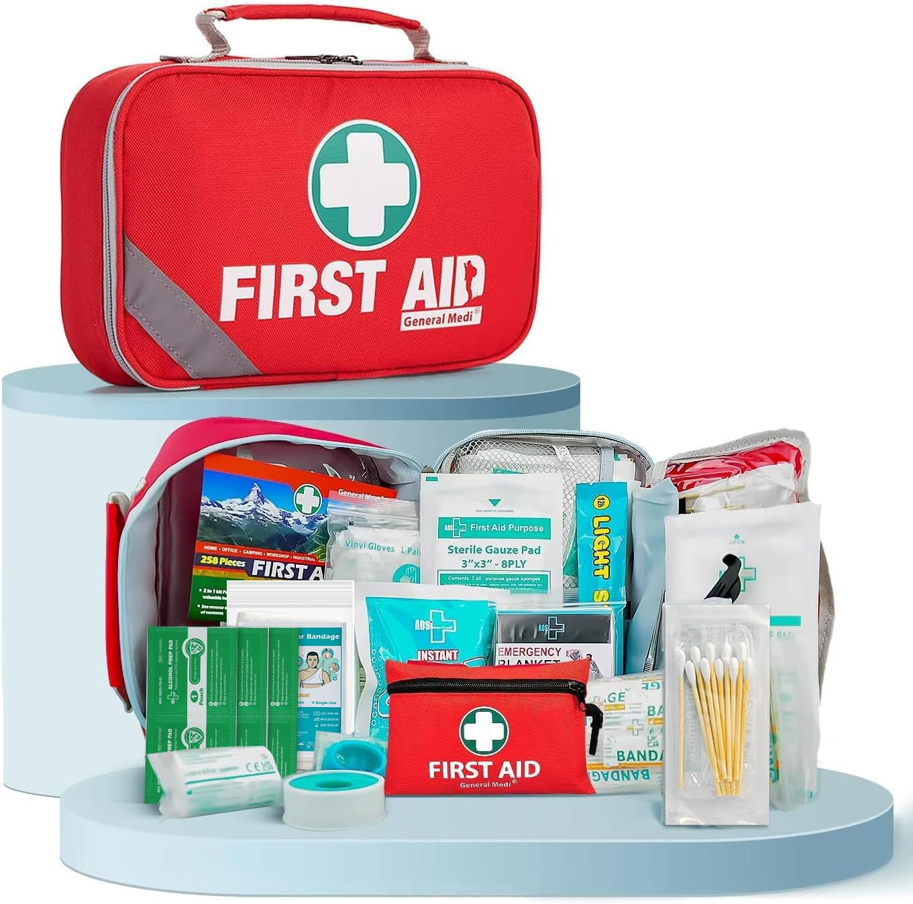

Keeping your car road ready is important for safety, performance, and saving money. Regular maintenance helps prevent breakdowns and keeps your vechile running smoothly. This website provides basic car tips, maintenace guides, and a simple survey to help drivers understand how to take better care of their vechiles. If you should have any questions or comments be sure to send us email, which will be listed down below in our main page. Thank you for checking us out and hope to see you all in the near future!



331 Auto Lane Rd
Fayetteville, NC 28314
Keeping Your Car Road Ready!
Copyrights 2026